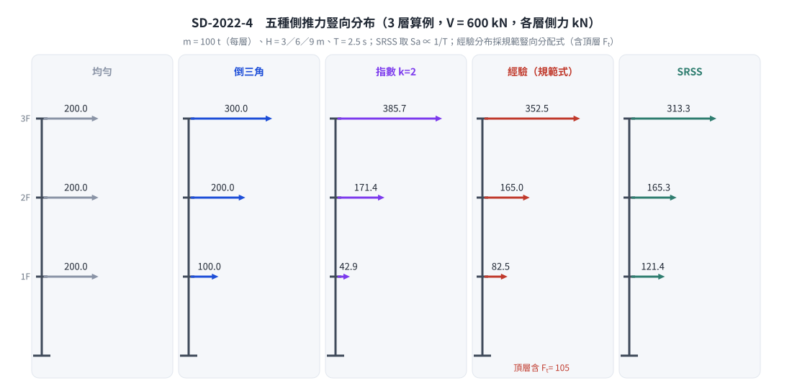

📄 題目正本：考卷原文・附圖・判讀清單（已確認）
SD-2022-4 題目正本
本檔只記錄考卷上寫了什麼、圖上畫了什麼，不含任何解法。解析見同資料夾
SD-2022-4.md。
判讀清單經使用者確認前，狀態為「待確認」；確認後本檔原則上不再修改（改動須回考卷原圖並記 log）。
| 項目 | 內容 |
|---|---|
| 考卷 | raw/exams/SD-2022_結構動力分析與耐震設計.pdf，第 2 頁（反面，頁次 2－2）下半，第四題 |
| 考年 | 2022（民國111年）專技高考結構工程技師「結構動力分析與耐震設計」（代號 00330） |
| 配分 | 25 分（㈠20、㈡5） |
| 附圖 | 無（純文字題） |
| 判讀狀態 | 已確認（2026-11-16，使用者授權依 Claude 建議。原轉錄：2026-11-16 轉錄；PyMuPDF 110 dpi 整頁目視（子題編號 ㈠㈡ 在文字層為私用字元，以影像判讀），PDF 文字層核對原文；盲讀於開啟解析前完成） |
1. 考卷原文（逐字）
四、進行靜力彈塑性分析方法（Pushover）分析時，需要分數步驟逐步增加作用側力，而其側力的豎向分配之合理性對耐震評估結果的準確性有明顯的影響。對於規則性可簡化為平面結構的建築結構進行水平地震力分布，即水平地震力豎向分配時，建議採用的方法有：均勻分布、倒三角分布、指數分布、經驗分布以及振態組合法（SRSS）。請詳細回答下列問題：
㈠說明各種水平側向力分布的計算方法，並給予一個3 層平面結構計算例。（20 分）
㈡評論各種分配方法的應用局限性。（5 分）
2. 考卷給的公式、附表與參數
- 考卷沒有給任何公式、數值或附表。
- 考卷列出五種分配方法名稱：均勻分布、倒三角分布、指數分布、經驗分布、振態組合法（SRSS）。
- 考卷沒有給：㈠ 計算例的任何數據（樓層重量、樓高、週期、振態、反應譜、基底剪力）——由考生自行假設；「經驗分布」所指的具體公式；指數分布的指數 $k$ 取法。
- 卷首注意事項：㈠可以使用電子計算器。㈡不必抄題，作答時請將試題題號及答案依照順序寫在試卷上，於本試題上作答者，不予計分。㈢本科目除專門名詞或數理公式外，應使用本國文字作答。考試時間：2 小時。
3. 附圖
本題無附圖。
4. 判讀清單
| # | 項目 | 判讀 | 圖上／題文依據 | 把握 |
|---|---|---|---|---|
| 1 | 「經驗分布」的內容 | 考卷未定義；定案解讀為以經驗公式表示的豎向分配，典型為規範等值靜力法的 $F_x=\dfrac{(V-F_t)W_xh_x}{\sum W_ih_i}$（含頂層集中力 $F_t$）。理由：五種方法中只有此項未對應明確數學形式，國內 Pushover 教材多以規範豎向分配式作為經驗式；作答宜先寫明所採定義 | 題文只列名稱 | 不確定（解讀）——定案如左；不影響「列出方法＋計算例」的作答架構 |
| 2 | 「指數分布」的內容 | 解讀為 $F_x\propto W_xh_x^{\,k}$，$k$ 隨基本週期由 1（短週期）到 2（長週期）線性變化（FEMA 356／ASCE 41 型式）；考卷未給 $k$ | 題文只列名稱 | 確定（解讀） |
| 3 | ㈠ 計算例 | 3 層平面結構，所有數據由考生自行假設；五種方法都要算出各層側力（同一組假設比較最有意義） | 題文「給予一個3 層平面結構計算例」 | 確定（解讀） |
| 4 | 振態組合法（SRSS） | 各振態側力分布 $F_{in}\propto \Gamma_n m_i\phi_{in}S_{an}$ 以 SRSS 組合樓層剪力或側力後作為側推分布（作答宜說明是組合「層剪力」再差分，或直接組合側力） | 題文「振態組合法（SRSS）」 | 確定（解讀） |
| 5 | 適用前提 | 規則性、可簡化為平面結構的建築物；分配對象是 Pushover 的側推力豎向分布（非設計地震力本身） | 題文 | 確定 |
| 6 | ㈡ | 評論每一種方法的應用局限性（5 分） | 題文 | 確定 |
| 7 | 考卷沒有給 | 計算例數據；規範名稱與版本（若引用規範豎向分配式，依現行建築物耐震設計規範） | 題文 | 確定 |
轉錄：2026-11-16（SD-U3-1 題目正本推廣・組 U3-1-G2）
確認：2026-11-16 使用者授權依 Claude 建議確認（SD-U3-1 題目正本推廣・組 U3-1-G2，關卡一）
考題編號：SD-2022-4
主分類： SD-U3-1 結構耐震設計（含 RC 結構與鋼結構）
副分類： SD-U2-2 建築耐震設計規範
分析方法： 概念題（含計算）
標籤： Pushover分析 靜力彈塑性 側力分布 均勻分布 倒三角分布 指數分布 經驗分布 SRSS組合 性能設計
1. 題目（考卷原文見題目正本）
考卷原文、公式／附表、附圖與判讀清單（已確認）見
SD-2022-4-problem.md。本節只列解題時最容易讀錯的地方與本解使用的記號；題意以題目正本為準。
本題為純文字題，考卷無附圖。
常見誤讀
| 項目 | 正確判讀 | 常見誤讀 |
|---|---|---|
| 計算例數據 | 考卷沒有給任何數據，3 層平面結構的質量、樓高、週期、振態、基底剪力全由考生自行假設並寫明（判讀 #3） | 以為漏印數據，或只寫公式不算例 |
| 「經驗分布」 | 考卷未定義；題目正本定案解讀為規範等值靜力法豎向分配式（含頂層集中力 $F_t$）；作答須先寫明所採定義（判讀 #1） | 不寫定義直接套用一階振態分布（本庫舊解） |
| 「指數分布」 | $F_x\propto W_xh_x^{\,k}$，$k$ 隨週期 1→2（判讀 #2） | $k$ 任意取值不說明依據 |
| 振態組合法（SRSS） | 是一種側力豎向分布：各振態層剪力以 SRSS 組合後差分成單一分布再側推（判讀 #4） | 每個振態各做一次 Pushover 再組合需求量（MPA，本庫舊解）；或與其他方法結果再做 SRSS 組合 |
| 振態形狀 | 等質量等勁度 3 層：$\phi_1=\{0.445,\ 0.802,\ 1\}$ | 粗估 $\{0.3,\ 0.7,\ 1\}$（與第二振態不正交，本庫舊解） |
| 適用前提 | 規則、可簡化為平面結構；分配的是 Pushover 側推力（判讀 #5） | 當成設計地震力的規範分配 |
本解記號： $V$ 基底剪力、$m_i$ 第 $i$ 層質量、$H_i$ 第 $i$ 層離地高度、$k$ 指數分布的指數、$\phi_{ji}$ 第 $j$ 振態第 $i$ 層振態值、$\Gamma_j$ 參與因子、$S_a(T_j)$ 譜加速度。
2. 考題核心精神與出題者意圖（Core Concepts & Examiner's Intent）
核心觀念： Pushover 分析的側推力是對地震慣性力的「靜力替代」；不同豎向分布對應不同的慣性力形狀假設。能說清楚五種方法的物理假設與計算方式、以同一組 3 層算例算出各層側力，並指出各自的適用範圍，是本題拿分關鍵。
出題者意圖：
- 測驗考生對 Pushover 分析流程的熟悉程度（ATC-40、FEMA 356、現行建築物耐震設計規範的豎向分配式）
- 要求配合數值例印證公式——五種方法都要算出數值，不只是背公式
- 「局限性」要求考生做批判性思考，而非照單全收
3. 解題戰略地圖與陷阱分析（Strategic Roadmap & Trap Analysis）
作答策略：
子題(一)：先寫明算例假設（考卷沒給，判讀 #3），每種方法先寫公式，再代入同一組3 層算例，最後給出各樓層力值彙整表。
子題(二)：每種方法指出 1～2 個核心局限性，最後補充所有 Pushover 方法的共同限制。
關鍵陷阱：
- 振態組合法（SRSS）是一種側力分布（判讀 #4）：先求各振態的樓層剪力，以 SRSS 組合成各層剪力，再由相鄰層剪力差得到單一組側力分布，用它做一次 Pushover。它不是「每個振態各做一次 Pushover 再組合需求量」（那是多振態側推分析 MPA，屬另一種方法，見 §5.7）。
- 「經驗分布」考卷沒有定義（判讀 #1）：本解採規範等值靜力法的豎向分配式（頂層集中力 $F_t$＋其餘依 $W_xh_x$ 分配）；作答時先寫明採用的定義。
- 指數分布的 $k$ 值：$k$ 隨基本週期 $T$ 決定（不是隨意設的），$k=1$ 退化為倒三角，$k=2$ 為拋物線分布。
- 振態要用正確的振態形狀：等質量、等層勁度 3 層剪力屋架的振態可解析求得（$\phi_1=\{0.445,\ 0.802,\ 1\}$），不要用粗估值，否則各振態不正交、參與因子失真。
- 均勻分布不等於每層相同位移：均勻分布是「每層相同力」。
3.5 變數層次分析（Variable Hierarchy Analysis）
複習提示：第一次解題後，在每個卡住的知識點旁標記
⚠；第二次複習時只看有⚠的項目。
最終目標
說明 5 種 Pushover 側力分布公式，以 3 層算例計算各樓層力，並評論局限性
本題關鍵公式（依計算順序）
$$\text{均勻：} F_i = \frac{V}{n}$$
$$\text{倒三角：} F_i = V \cdot \frac{m_i H_i}{\sum_j m_j H_j}$$
$$\text{指數：} F_i = V \cdot \frac{m_i H_i^k}{\sum_j m_j H_j^k}, \quad k = \begin{cases} 1 & T \leq 0.5\,\text{s} \\ 1+\frac{T-0.5}{2} & 0.5 < T < 2.5\,\text{s} \\ 2 & T \geq 2.5\,\text{s} \end{cases}$$
$$\text{經驗（規範式）：} F_t = 0.07TV\le0.25V\ (T\le0.7\text{ s 時 }F_t=0),\quad F_i=(V-F_t)\frac{W_iH_i}{\sum_j W_jH_j}\ (+F_t\text{ 於頂層})$$
$$\text{振態組合（SRSS）：} V_{in}=\Gamma_n S_{an}\sum_{j\ge i}m_j\phi_{jn},\quad V_i=\sqrt{\textstyle\sum_n V_{in}^2},\quad F_i=V_i-V_{i+1}$$
L1：算例假設（考卷沒給，由解題者自設）
| 符號 | 數值 | 說明 |
|---|---|---|
| n | 3 | 樓層數 |
| $m_1 = m_2 = m_3$ | 100 t（= kN·s²/m） | 各樓層質量（相等；重量比例同質量比例） |
| $H_1, H_2, H_3$ | 3, 6, 9 m | 各樓層離地高度 |
| V | 600 kN | 側推基底剪力（各方法統一，用來比較形狀） |
| $T$ | 2.5 s | 基本週期（指數法、經驗法使用） |
| 層勁度 $k$ | 3189 kN/m（三層相同） | 為使 $T_1=2.5$ s 反推（SRSS 法使用） |
| 反應譜 | $S_a\propto 1/T$ | 假設三個週期都落在等速度段（SRSS 法使用；只影響形狀） |
L2：需知識點推導
| 步驟 | 公式/來源 | 卡關? |
|---|---|---|
| 均勻分布 | $V/n$ | |
| 倒三角 $\sum m_j H_j$ | 質量×高度加權 | |
| 指數 $k$ 判斷 | $T\ge2.5$ s → $k=2$ | |
| 經驗分布 $F_t$ | $0.07(2.5)(600)=105\le150$ kN | |
| 振態 | $(K-\omega^2M)\phi=0$：$T=\{2.500,\ 0.892,\ 0.617\}$ s | |
| 參與因子 | $\Gamma=\{1.220,\ 0.349,\ -0.134\}$（$\phi$ 以最大分量為 1 正規化） | |
| SRSS 層剪力 | 各振態層剪力 SRSS 後差分 |
L3：深層知識（不懂就卡住）
| 知識點 | 說明 | 卡關? |
|---|---|---|
| Pushover 的物理假設 | 用靜力替代動力——假設結構從彈性逐步推至非彈性，忽略地震動態的交替正負效應 | |
| 為何要多種側力分布 | 無法預知地震時真實側力分布；不同分布捕捉不同破壞機制，FEMA 356 建議至少用兩種分布包絡 | |
| 模態參與因子 Γ | 振態側力 $= \Gamma_n m_i\phi_{in}S_{an}$，Γ 與有效質量決定各振態貢獻比例 | |
| SRSS 組合的對象 | 組合層剪力（反應量）而非直接組合各層力；組合後的值皆為正，差分得到的分布隱含高振態使上部側力加大 |
4. 步驟化詳細計算過程（Step-by-Step Detailed Calculation）
算例設定（考卷未給，自設；判讀 #3）
3層剪力屋架（平面）：
樓層質量：m₁ = m₂ = m₃ = 100 t（各層重量相同）
樓層高度：H₁ = 3 m, H₂ = 6 m, H₃ = 9 m（每層 3 m）
側推基底剪力：V = 600 kN（各方法統一使用，以比較分布形狀）
基本週期：T = 2.5 s（層勁度 k = 3189 kN/m，三層相同）
反應譜形狀：Sa ∝ 1/T（SRSS 法用）
方法一：均勻分布（Uniform Distribution）
原理： 各樓層承受與質量成正比的側力（等質量時各層相等），相當於全高等加速度，強調下部樓層剪力。
$$F_i = V\frac{m_i}{\sum m_j}=\frac{V}{n}\quad(\text{等質量})$$
算例：
$$\boxed{F_1 = F_2 = F_3 = \frac{600}{3} = 200 \text{ kN}}$$
方法二：倒三角分布（Inverted Triangular Distribution）
原理： 側力與樓高成線性比例，相當於假設一階振態為直線。
$$F_i = V \cdot \frac{m_i H_i}{\displaystyle\sum_{j=1}^{n} m_j H_j}$$
算例：
$$\sum m_j H_j = 100(3) + 100(6) + 100(9) = 1800 \text{ t·m}$$
$$\boxed{F_1 = 600 \times \frac{300}{1800} = 100 \text{ kN}, \quad F_2 = 200 \text{ kN}, \quad F_3 = 300 \text{ kN}}$$
方法三：指數分布（Power Law Distribution）
原理： 以指數 $k$ 修正高度權重，週期愈長側力愈集中於上部，間接反映高振態（FEMA 356／ASCE 7 型式）。
$$F_i = V \cdot \frac{m_i H_i^k}{\displaystyle\sum_{j=1}^{n} m_j H_j^k}$$
$$k = \begin{cases} 1.0 & T \leq 0.5 \text{ s（退化為倒三角）} \\ 1 + \dfrac{T - 0.5}{2} & 0.5 < T < 2.5 \text{ s} \\ 2.0 & T \geq 2.5 \text{ s（拋物線分布）} \end{cases}$$
算例（T = 2.5 s → k = 2）：
$$\sum m_j H_j^2 = 100(9 + 36 + 81) = 12{,}600 \text{ t·m}^2$$
$$F_1 = 600 \times \frac{900}{12{,}600} = \boxed{42.9 \text{ kN}},\quad F_2 = 600 \times \frac{3{,}600}{12{,}600} = \boxed{171.4 \text{ kN}},\quad F_3 = 600 \times \frac{8{,}100}{12{,}600} = \boxed{385.7 \text{ kN}}$$
方法四：經驗分布（規範豎向分配式；判讀 #1）
原理： 採建築物耐震設計規範第 2.11 節的豎向分配經驗式：頂層加集中力 $F_t$ 以近似高振態，其餘依 $W_xh_x$（倒三角）分配。
$$F_t = 0.07TV\ \ (\le 0.25V;\ T\le0.7\text{ s 時 }F_t=0),\qquad F_x=(V-F_t)\frac{W_xh_x}{\sum W_ih_i}$$
算例：
$$F_t=0.07(2.5)(600)=105\ \text{kN}\ \le\ 0.25(600)=150\ \text{kN}$$
$$V-F_t=495\ \text{kN}:\quad 495\times\frac{1}{6}=82.5,\ \ 495\times\frac{2}{6}=165.0,\ \ 495\times\frac{3}{6}=247.5\ \text{kN}$$
$$\boxed{F_1=82.5\ \text{kN},\quad F_2=165.0\ \text{kN},\quad F_3=247.5+105=352.5\ \text{kN}}$$
另一種常見的「經驗」寫法是依第一振態形狀分配 $F_i\propto m_i\phi_{1i}$。以本例精確振態 $\phi_1=\{0.445,\ 0.802,\ 1\}$ 得 118.8／214.1／267.0 kN（見方法五的振態）。考卷未定義時，作答須寫明所採定義。
方法五：振態組合法（SRSS 分布；判讀 #4）
原理： 以振態疊加求各振態的樓層剪力，依 SRSS 組合成各層剪力，再以相鄰層剪力差得到單一組側力分布，用來做 Pushover。因 SRSS 會把高振態的貢獻計入，上部側力通常比一階分布大。
Step 1 振態分析（$K=k\begin{bmatrix}2&-1&0\\-1&2&-1\\0&-1&1\end{bmatrix}$，$M=100I$）：
| 振態 | $T_n$ (s) | $\phi_n$（1F, 2F, 3F） | $\Gamma_n$ | 有效質量比 |
|---|---|---|---|---|
| 1 | 2.500 | {0.445, 0.802, 1.000} | 1.220 | 91.4% |
| 2 | 0.892 | {1.000, 0.445, −0.802} | 0.349 | 7.5% |
| 3 | 0.617 | {−0.802, 1.000, −0.445} | −0.134 | 1.1% |
Step 2 振態層剪力：$V_{in}=\Gamma_n S_{an}\sum_{j\ge i}m_j\phi_{jn}$，取 $S_{an}\propto1/T_n$（只需相對值）。各層 SRSS 層剪力比為 $V_1:V_2:V_3=112.7:89.9:58.8$。
Step 3 差分並縮放至 $V=600$ kN：
$$F_3=V_3,\quad F_2=V_2-V_3,\quad F_1=V_1-V_2$$
$$\boxed{F_1=121.4\ \text{kN},\quad F_2=165.3\ \text{kN},\quad F_3=313.3\ \text{kN}}$$
反應譜形狀會影響結果：若改用平坦譜（各振態 $S_a$ 相同），高振態權重更大，上部側力更集中。
算例結果彙整表
| 樓層 | 均勻 (kN) | 倒三角 (kN) | 指數 k=2 (kN) | 經驗（規範式）(kN) | SRSS (kN) |
|---|---|---|---|---|---|
| 3F（頂） | 200 | 300 | 385.7 | 352.5 | 313.3 |
| 2F | 200 | 200 | 171.4 | 165.0 | 165.3 |
| 1F | 200 | 100 | 42.9 | 82.5 | 121.4 |
| 合計 | 600 | 600 | 600 | 600 | 600 |

圖 1 同一組算例假設（$V=600$ kN）下五種分布的各層側力，箭頭長度與力成正比。經驗分布用規範式（頂層含 $F_t=105$ kN），SRSS 為振態層剪力組合後差分的單一分布。本圖攔下「經驗分布＝一階振態」「SRSS 沒有側力數值（多次側推）」兩種舊解誤讀。
5. 各方法應用局限性（子題二）
5.1 均勻分布
- 局限： 假設各層加速度相同，忽略高度效應，高估下部、低估上部需求；推出的破壞機制偏向底層
- 適用條件： 作為包絡分析的一端（FEMA 356 建議與振態型分布併用），檢驗軟弱底層機制
5.2 倒三角分布
- 局限： 等同假設一階振態為直線，只適合短週期、一階振態主導的規則低矮建築；高振態明顯時低估上部需求
- 適用條件： 低矮、規則、短週期結構
5.3 指數分布
- 局限： $k$ 值為經驗式，只用基本週期粗略代表高振態，無法反映特定結構的質量、勁度分布；塑化後實際分布改變
- 適用條件： 中長週期規則建築，比倒三角更合理
5.4 經驗分布（規範式）
- 局限： 規範式是為彈性設計地震力訂定的，$F_t$ 只是以單一集中力近似高振態；用於非線性側推時，與實際慣性力形狀可能不符，且對不規則或軟弱層結構誤差大
- 適用條件： 規則、中低層、與規範設計一致的評估；若改採一階振態分布，則只適用一階振態主導的結構
5.5 振態組合法（SRSS）
- 局限：
- 振態與 $\Gamma$ 是彈性性質，塑化後振態改變但分布仍固定
- SRSS 組合後的值都是正值，喪失各振態的正負號，差分得到的分布不對應任一真實瞬間的慣性力
- 結果受反應譜形狀影響，須先做振態分析與選定設計譜
- 適用條件： 高層、高振態效應顯著的規則結構
5.6 所有 Pushover 方法的共同局限性
最根本的限制： Pushover 是靜力分析，無法完全替代動力時程分析。
- 側力分布固定不變： 推覆過程中分布不隨塑化調整（適應性側推可改善）
- 忽略往返效應： 單向推覆無法模擬反覆加載的強度、勁度退化
- 不適用於非規則結構： 扭轉、軟弱層、立面不規則難以用平面固定分布呈現
- 目標位移的不確定性： 需配合能力譜法或位移係數法求目標位移，本身有近似誤差
5.7 延伸：多振態側推分析（MPA）與舊解對照
另有一種做法是每個振態各做一次 Pushover，各自求目標位移下的反應，再以 SRSS 組合需求量（Chopra 與 Goel 的 MPA）。它組合的是「各次側推的反應量」，與題目所列「振態組合法（SRSS）」這種側力豎向分布不同。
舊解（2026-11-16 勘誤前）把方法五寫成 MPA、無側力數值；把「經驗分布」定義成一階振態分布，並採粗估振態 $\{0.3,\ 0.7,\ 1.0\}$、$\{1.0,\ 0.3,\ -0.7\}$（兩者 $\phi_1^TM\phi_2=-19\ne0$，不正交），得 90／210／300 kN。現依題目正本判讀 #1、#4 改寫，經驗分布改為 82.5／165.0／352.5 kN，SRSS 補算 121.4／165.3／313.3 kN。
補充：五種方法比較一覽
| 方法 | 公式形式 | 計算複雜度 | 適用結構 | 高振態效應 |
|---|---|---|---|---|
| 均勻 | $\propto m_i$ | ★ | 包絡下限、底層機制 | ✗ 未考慮 |
| 倒三角 | $\propto m_i H_i$ | ★ | 短週期規則結構 | ✗ 未考慮 |
| 指數 | $\propto m_i H_i^k$ | ★★ | 中長週期規則結構 | △ 以 $k$ 間接考慮 |
| 經驗（規範式） | $F_t$＋$\propto W_iH_i$ | ★★ | 規則中低層 | △ 以 $F_t$ 近似 |
| SRSS | 振態層剪力 SRSS 後差分 | ★★★ | 高層、高振態顯著 | ✓ 直接考慮（彈性振態） |
修正日期：2026-11-16（§1 改為指向題目正本；本題無附圖，不重繪）
修正日期：2026-11-16（勘誤：依題目正本判讀 #1、#4 改寫——經驗分布由一階振態分布 90／210／300 kN 改為規範豎向分配式（Ft＝0.07TV＝105 kN）82.5／165.0／352.5 kN；振態組合法（SRSS）由多次側推組合需求量（無數值）改為振態層剪力 SRSS 後差分的單一分布 121.4／165.3／313.3 kN；粗估振態 {0.3, 0.7, 1.0}／{1.0, 0.3, −0.7}（不正交）改為精確振態；刪除自我更正亂句、修正 Σm·H 單位；改寫 §2–§5 與比較表，舊答降為 §5.7 對照。錯誤類型：L1 讀題（未依已確認題目正本）＋觀念模型（振態）。證據：2022 年考卷第 2 頁第四題；Ft 式依建築物耐震設計規範第 2.11 節。驗證：scripts/fixes/2026-11-16_verify_SD-2022-4.py（numpy 特徵值、兩路層剪力）MISMATCHES: 0）
修正日期：2026-11-16（非勘誤）圖解補繪：§4 彙整表後加 figs/SD-2022-4-fig-1-distributions.svg（腳本 gen_SD-2022-4.py，可重跑）